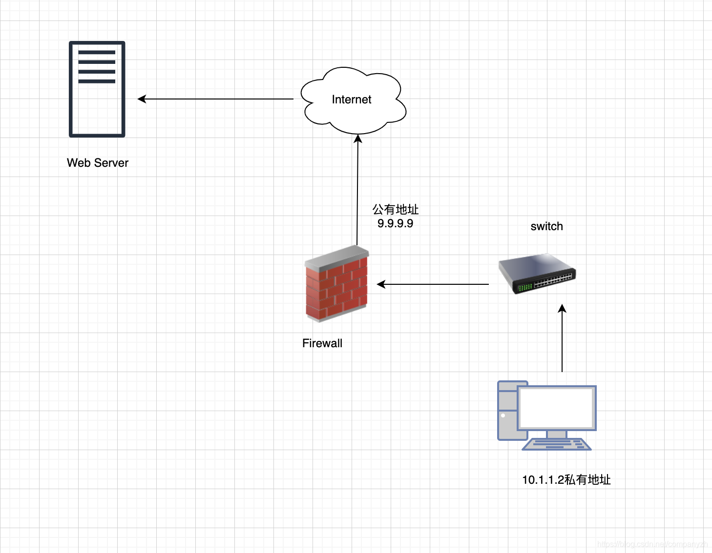
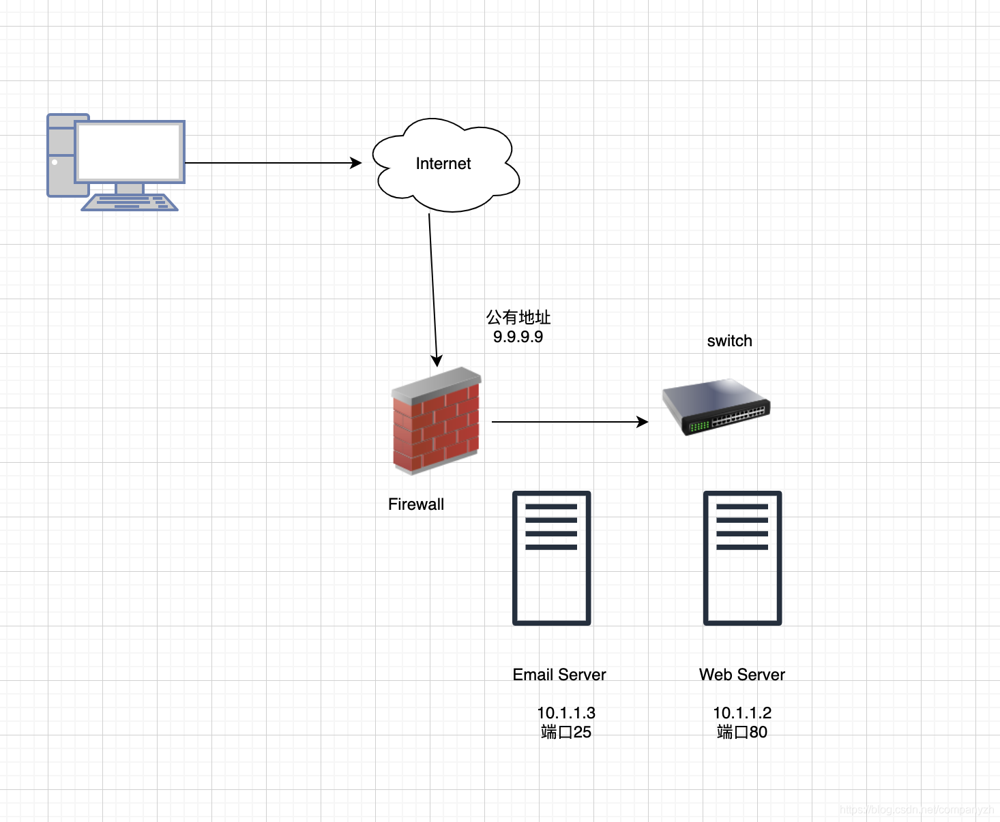

- 01 我应该站在谁的肩膀上 - OSI vs TCPIP模型.md.html
- 02 万丈高楼平地起- 物理层 + 数据链路层.md.html
- 03 OSI的灵魂就是我 - 网络层.md.html
- 04 要快还是要稳你说好了 - 传输层.md.html
- 05 是时候展现真正的技术了 - 应用层.md.html
- 06 重回小学课堂 - 二进制101.md.html
- 07 1+1 = 2吗？ - 二进制的计算.md.html
- 08 16进制又是个什么鬼？ - 16进制的讲解.md.html
- 09 我想有个家 - 什么是IP地址.md.html
- 10 我可是住二环的人 - IP地址的组成和分类.md.html
- 11 我已经没地方住了吗 - IPv6.md.html
- 12 向左还是向右 - IP路由.md.html
- 13 我能给你安全感 - TCP（一）.md.html
- 14 我那不为人知的秘密是什么 - TCP（二）.md.html
- 15 不问收没收到，就问快不快 - UDP.md.html
- 16 我为什么与众不同 - TCP高级篇（拥塞模型）.md.html
- 17 来，先看看我的家谱 - HTTP的身世.md.html
- 18 我都这么成功了，你却说我不行 - HTTP 的特点和缺点.md.html
- 19 我老了，让我儿子来吧 - HTTP2.md.html
- 20 稳重的大外甥 - HTTPS.md.html
- 21 HTTP的高级篇 - HTTPClient（Java）.md.html
- 22 想来我家，你自己查呀 - DNS.md.html
- 23 来的早，不如来得巧 - NAT.md.html
- 24 辛苦的邮政 - SMTP.md.html
- 25 你就是看不见我 - VPN.md.html
- 26 黑客的好帮手 - SSH.md.html
- 27 你可以得到我的心，却得不到我的人 - 物理安全设备.md.html
- 28 你怎么证明你就是你 - 身份验证和访问控制.md.html
- 29 我要怎么藏好我的考研资料 - 网络攻击（一）.md.html
- 30 我要怎么藏好我的考研资料 - 网络攻击（二）.md.html
- 31 如何保护我的考研资料 - 网络攻击防范.md.html
- 32 Linux网络安全 - 安全实战.md.html
- 33 结语.md.html
23 来的早，不如来得巧 - NAT
为什么需要NAT?
IP地址被设计为全球唯一且可全球访问。IP寻址是支持Internet端到端体系结构的基础。1990年代初期，Internet的爆炸性增长不仅预示了IP地址空间耗尽的危险，而且对IP地址本身也产生了即时的需求。现在，我们需要连接大量的用户网络和家用计算机，它们都需要大量的IP地址。 IPv4寻址方案中只有40亿个地址，而我们拥有的计算机比这多出十亿，当然也有比这个数字大的多的多的人口。这就更加造成了IP地址的不足。NAT就在这个时候出现了。它可以满足这一快速上涨的需求（这就是所谓的，站在风口上，猪都能起飞）。它突然为我们提供了数十亿个内部可使用的地址，这就扩大了我们可以使用IPv4在Internet上使用的IP数量。 NAT在没有采用IPv6的任何情况下就已经出现，如果不是那样的话，我们可能也不需要NAT。
什么是NAT?
NAT的全名是(Nerwork Address Translation)，也就是网络地址转换。它是一种协议，用于在从一个网络穿越到另一个网络时修改源和/或目标IP地址。换句话说，此协议将修改我们的源IP地址，例如我们网络上的内部IP地址，并且在出Internet时将其替换为自己的公共IP地址（就好像在家怎么都无所谓，出门了就必须要装扮起来，和别人看上去有所不同）。
NAT也可以反向使用。如果有人从外部进入我们的Web服务器，他们将转到防火墙上的公共IP地址，然后它将转换为我们Web服务器上的内部IP地址。这样，他们就永远不知道内部的实际IP地址是什么。
那是什么设备使网络地址转换起作用呢？
- 首先我们有防火墙。它们与这节提到的网络地址转换一起工作，并且在数据出到Internet时也将私有转换为公有。
- 路由器以及所有相关设备的情况，它们都会剥夺源IP地址。
- 交换机也可以，但是交换机必须要有一个特定的功能，那就是必须具有InterVLAN功能才能使用NAT，这基本上意味着该交换机已变成路由器，可以在其中将数据从一个子网路由到另一个子网。如果我们使用不具有InterVLAN的第2层交换机，则它所能做的就是将其转发到路由器上，然后路由器提供NAT服务。
NAT的存在价值就是需要更多的IP地址并向潜在的黑客隐藏我们自己的内部地址。正是因为NAT为我们执行了这两项功能，因此在IPv4网络中使其变得无价。
NAT类型
NAT一对一转换
最简单的NAT提供的是IP地址的一对一转换。基本的NAT可用于互连两个不兼容的IP网络地址。例如，如果我们的私有IP为10.1.1.2，它将通过NAT转换为9.9.9.9（这也被称为静态NAT）。当消息发送到公用计算机并使用防火墙或路由器提供的IP替换IP时，它会隐藏其内部IP地址。
我们现在来看一下NAT是怎么遍历的。如果我们使用内部PC从右下角的10.1 .1 .2私有IP开始，则流量将通过交换机上升并通过防火墙。这也就是流量从我们的内部IP转换为公共IP 9.9.9.9的地方。在到达Web服务器时，Web服务器仅看到公共IP，不知道私有IP是什么（就好像有一个笑话，你在北京上海工作的时候叫什么Linda，Lisa，但是回了村是不是叫二狗和翠花，但是你在外面工作的时候，没人知道你"内部"的名字吧。没有贬低呀，只是举个例子，这个道理是一样的）。可以参考下面这个图

NAT一对多转换
一对多NAT是最常用的NAT，因为它可以保留公共网络上的IP地址。局域网中计算机的所有内部地址有时会出入Internet以查看网站或使用其他服务。他们所有人都会将其内部地址隐藏在公共IP或防火墙后面。你还可以创建一个包含多个公共IP的池，以使黑客猜测这些IP的来源。你必须分配一个IP地址区域，而不是在防火墙外部分配一个具体的IP地址。在这种情况下，它称为“少对多”，而不是“多对一”。当你在防火墙的公共端上只有一个IP地址，并且内部有许多设备都需要因为不同的目的转发流量就外面的花花世界转一圈时，我们使用一种称为NAPT的设备。这个设备也称为PAT或者Port Address Translation也就是端口地址转换。让我们再次看一下NAT遍历，但是这次，我们将要从外部PC开始，然后将其连接到Internet，之后再通过我们的公共防火墙。至此，它将进入我们的网络内部。这也是讲9.9.9.9转换为10.1.1.1 - 3。这些服务器中的每一个都执行不同的操作，所以它们侦听不同的端口，这也是为什么我们看到Web服务器侦听端口80，而电子邮件服务器侦听端口是25。可以参考下面这个图

我们要做的是使用端口地址转换将其拆分。这确实可以节省公共IP地址，因为我们使用两个提供两种不同服务的公共服务器，并且使用了端口地址转换，但是使用了单个公共地址。今天使用的最常见的NAT类型对于IP保留和安全性非常有用。尽管这个方案不是完美的解决方案，但由于安全性和缺乏可用的公共IP，NAT具有许多功能，如果没有它，将无法使用当前的IPv4。
NAT环回
另一种网络地址转换类型称为环回，也称为反射。它是基于RFC 1483，指的是位于公共IP地址上的主机名IP，但实际的服务器位于你自己的局域网内。所以当你想访问此网站时，看起来像要通过防火墙，然后再次重新进入内部。通常来说，除非防火墙启用了RFC 1483这个功能，要不然防火墙是不允许这样做的。
NAT环回是一种NAT功能，如果局域网内部有需要由同一网络中的其他设备访问的资源，则可以使用大多数防火墙和路由器将其打开。
IPV6和NAT的关系
我前面提到过NAT出现的时候，还没有IPV6，那他们两个是不是竞争关系呢？网络地址转换在IPV6中并不常用，因为IPv6的设计目标之一是恢复端到端网络连接。引入NAT时，端到端连接断开了，因为NAT设备会从源IP中剥离信息，这是端到端通信正常工作所必需的。
IPv6具有2的128次幂，这就是使得NAT允许保存的地址的需求变得多余。因为IPV6可以为每个设备分配唯一的全局可路由地址。 IPv6-to-IPv6网络前缀转换或NPTv6是一项实验性规范，主要是为了实现隐藏内部IP地址的功能，使其不会隐藏到可用于网络地址转换的Internet。它是无状态的，这意味着它不存储有关连接两侧的任何信息，并且达到了端到端主体。 NPTv6不会像IPv4中那样将整个地址从私有地址转换为公共地址，而只会转换为IPv6地址的前缀位。尽管并没有普遍使用基于IPv6的NAT，但是该技术正在发展，因此端到端连接将继续起作用，同时也是出于安全目的而混淆内部IP地址。
NAT影响的应用
网络地址转换会影响几种不同的应用程序。我们在这里来看看其中的一些例子。
- 第一个是处于Actve模式的FTP或文件传输协议，它使用单独的连接来控制流量和传输文件内容。当需要文件传输时，发出请求的主机通过其TCP/IP地址识别相应的数据连接。如果发出请求的主机位于简单的NAT防火墙之后，则IP地址和端口号的转换会使服务器接收的信息无效。
- 另一个例子是会话启动协议（SIP VOIP Calls)），它可以控制许多IP语音通话，并且存在相同的问题。 SIP使用多个端口建立连接并通过实时传输。在遍历网络地址转换之前，必须知道IP地址和端口号。
但是，有一些特殊的技术可以解决这些问题，我们使用软件来解决这一问题。解决这些问题的方法之一是应用程序层网关（Application Layer Gateway）。应用层网关软件或硬件可以解决许多这些问题。 ALG软件模块需要在NAT防火墙设备上运行，并且它会更新由于地址转换而无效的任何有效负载数据。 ALG需要了解他们需要修复的协议，因此每个有此问题的协议都需要一个单独的ALG。解决该问题的其他方法还有STUN或ICE。 STUN代表（Session Traversal Utilities for NAT) NAT的会话遍历实用程序，它专门用于解决由NAT引起的VoIP和流式传输的实时问题。当然这些只是做个介绍。聪明的你是不需要知道这些细节的，一般只有真正的硬件网络工程师才需要知道的更多（你已经知道的太多了）。
NAT的局限
再好的技术都不会是完美的，那我们来看一下NAT当前实施起来的局限性和安全性问题。根据VMware的说法，NAT会造成一些性能损失，因为NAT要求发送到虚拟机和从虚拟机接收的每个数据包都必须位于NAT网络中，这是不可避免的性能损失。
其次，NAT并非完全透明。网络地址转换通常不允许从网络外部启动连接。尽管你可以手动配置NAT设备以建立服务器连接。但是实际情况确是，某些需要从服务器启动连接的TCP和UDP协议无法自动运行，而有些协议可能根本就无法运行。
NAT提供了一些防火墙保护。标准NAT配置提供基本级别的防火墙保护，因为NAT设备可以启动来自专用NAT网络的连接。但是，如果没有其他手动配置，外部网络上的设备就无法启动与专用NAT网络的连接。 NAT在扩展IPv4地址的数量和隐藏我们的内部地址方面很有用，但是它并不完美。权衡利弊，在没有完全实施IPv6之前，NAT是解决这两个问题的最佳且唯一的解决方案。
NAT的成功就说明了，来得早，不如来得巧。兄弟们，加油吧!